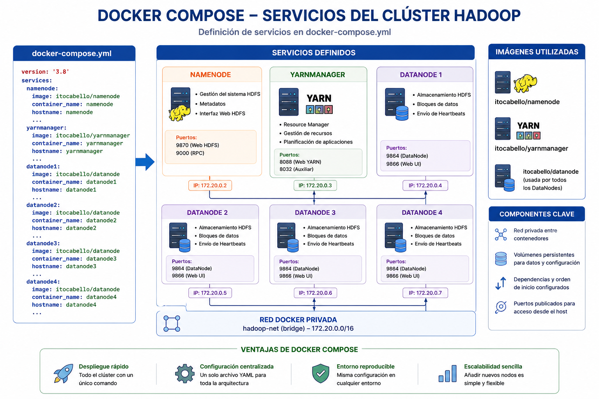
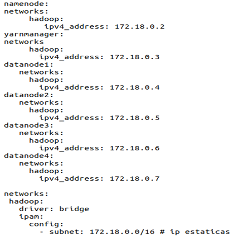
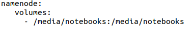

Capítulo 4. Arquitectura de Contenedores para el Despliegue del Entorno Big Data
Arquitectura de Contenedores para el Despliegue del Entorno Big Data
Arquitectura de Contenedores para el Despliegue del Entorno Big Data
Una vez construidas las imágenes Docker correspondientes a cada uno de los componentes del ecosistema Hadoop, el siguiente paso consiste en desplegar la infraestructura completa mediante Docker Compose.
Docker Compose permite definir toda la arquitectura del clúster en un único archivo denominado docker-compose.yml, desde el cual se configuran automáticamente todos los contenedores, redes, volúmenes, dependencias y puertos necesarios para el funcionamiento del entorno Big Data.
docker compose up -d
El archivo docker-compose.yml comienza definiendo todos los servicios que forman parte del clúster Hadoop. Cada servicio representa un contenedor independiente construido a partir de las imágenes Docker desarrolladas anteriormente.
| Servicio | Función |
|---|---|
| NameNode | Gestión del sistema HDFS. |
| YarnManager | Gestión de recursos YARN. |
| DataNode1 | Almacenamiento HDFS. |
| DataNode2 | Almacenamiento HDFS. |
| DataNode3 | Almacenamiento HDFS. |
| DataNode4 | Almacenamiento HDFS. |

Figura. Definición de servicios del clúster Hadoop.
Cada servicio especifica la imagen Docker sobre la que será construido, así como el nombre que recibirá dentro del clúster.
Docker Compose publica automáticamente los puertos necesarios para acceder a los servicios Hadoop desde el sistema anfitrión.
| Servicio | Puerto | Descripción |
|---|---|---|
| NameNode | 9870 | Interfaz Web HDFS. |
| YARN | 8088 | Resource Manager. |
| Jupyter Notebook | 8888 | Entorno de prácticas. |
| Hive | 10000 | Servidor Hive. |
Todos los contenedores pertenecen a una red Docker privada. Cada servicio dispone de una dirección IP fija para facilitar la comunicación entre los distintos componentes del clúster.

Figura. Red privada Docker con direcciones IP estáticas.
Con el objetivo de garantizar la persistencia de la información, Docker Compose utiliza volúmenes compartidos entre el sistema anfitrión y los contenedores.
Gracias a estos volúmenes, los datos permanecen almacenados incluso cuando los contenedores son eliminados o recreados.

Para facilitar el intercambio de información entre el sistema anfitrión y el clúster Hadoop, se utiliza el directorio compartido:
/media/notebooks
Todo archivo copiado en este directorio queda disponible automáticamente dentro del contenedor NameNode, pudiendo ser procesado mediante HDFS, MapReduce, Hadoop Streaming o Hive.

Figura 23. Arquitectura final del clúster Hadoop desplegado mediante Docker Compose.
Docker Compose constituye el elemento central del despliegue de la infraestructura Big Data desarrollada en este proyecto. Mediante una única definición declarativa es posible construir, configurar y ejecutar un clúster Hadoop completamente funcional, integrando NameNode, DataNodes, YARN, Hive, Jupyter Notebook y el resto de componentes necesarios para el desarrollo de las prácticas.
El archivo completo utilizado para este despliegue puede consultarse en el Anexo Docker, apartado docker-compose.yml.